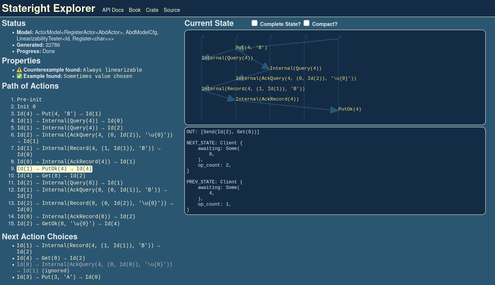

Building Distributed Systems With Stateright
Presenter:
Jonathan Nadal
Book:
www.stateright.rs
This talk attemps to to answer...
This talk attemps to to answer...
Why are distributed systems
difficult
?
e.g. race conditions and other nondeterminism
What
techniques
are effective?
e.g chaos testing and model checking
How can their limitations be
overcome
?
e.g. embeddable model checking
Why are distributed systems difficult?
Why are distributed systems difficult?
Decentralization and nondeterminism
Time is a partial order
Node crashes
Node timeouts
Node version differences
Message reordering
Message loss
Message redelivery (network/retries)
Security vulnerabilities
...
Why are distributed systems difficult?
Decentralization and nondeterminism
What techniques are effective?
What techniques are effective?
Exercise the nondeterminism.
Writing test cases for individual system "traces"
(sequences of steps) is insufficient.
What techniques are effective?
Jepsen
Black-box testing of production binaries.
Crashes nodes, introduces partitions, skews clocks, ...
Tests observable system behavior for correctness (e.g. linearizability).
Dozens of real world systems tested. Most failed.
Cassandra, CockroachDB, Elasticsearch, Hazelcast, Kafka, PostgreSQL, RabbitMQ, Redis, TiDB, VoltDB, ...
Limitation
: tests a random subset of possible traces
What techniques are effective?
Proofs
Inductive invariants verify all system behaviors.
Applicable to design or implementation
Limitation
: requires extensive training
What techniques are effective?
Proofs
Industry example: IronFleet
What techniques are effective?
Model checking
Enumerate all traces in a boundary
Typically design only
Who Builds a House Without Drawing Blueprints
Limitation
: risk of implementation divergence
What techniques are effective?
Model checking
Industry example: TLA+/TLC for AWS S3/DynamoDB/more.
How can their limitations be overcome?
How can their limitations be overcome?
Introducing
Stateright
, a model checker for distributed systems!
How can their limitations be overcome?
Stateright...
is a model checker provided as a Rust library.
allows you to verify systems implemented in Rust.
includes a "time travel debugger."
includes a model for an actor system.
includes a runtime for that actor system.
includes code to define reference semantics
for the system.
includes a linearizability tester.
includes extensive documentation.
How can their limitations be overcome?
Stateright's own limitations and caveats
Requires access to source code.
Only supports Rust at this time.
Actor runtime is a simplistic proof-of-concept.
Does not yet have a sizable community.
Will have breaking changes prior to the 1.0 release.
But I can coordinate with early adopters to minimize disruption.
How can their limitations be overcome?
Prior Art
VeriSoft
(for C)
Concuerror
(for Erlang)
Java PathFinder
(for the JVM)
Coyote
(for .NET)
Stateright Model Checker
Stateright Model Checker
Model Trait
Stateright Model Checker
Example: Sliding Puzzle
puzzles must be solvable
From
Wikipedia
(public domain):
Stateright Model Checker
Example: Sliding Puzzle
Stateright Model Checker
Example: Sliding Puzzle
If not solvable...
... then automated tests fail.
Stateright Model Checker
Example: Sliding Puzzle
If solvable, you can also verify a solution "trace."
Stateright Model Checker
Industry Example: ibc-rs
Inter-Blockchain Communication protocol
Rust impl:
github.com/informalsystems/ibc-rs
Copyright
Informal Systems
and
contributors
Open source:
Apache License 2.0
Partial TLA+ to Stateright port by
Vitor Enes Duarte
Stateright Model Checker
Industry Example: ibc-rs
⇧ TLA+ / Rust ⇩
Stateright Model Checker
Industry Example: ibc-rs
Highlights:
Model checks some of the Rust IBC implementation.
Incomplete experiment: ported a subset of protocol actions and only a trivial property thus far.
Stateright throughput exceeds TLC (TLA+ checker).
Rust is admittedly more verbose than TLA+.
Stateright Actor Framework
Stateright Actor Framework
Actor trait
Stateright Actor Framework
Example: PingPongActor
Stateright Actor Framework
ActorModel struct
Stateright Actor Framework
Example: Ping-Pong ActorModel
Stateright Actor Framework
Stateright Explorer
Time Travel Debugger

What's Next?
Foster a community of users and contributors
Book chapter on Multi-Paxos, then TBD (
ideas?
)
Dynamic partial order reduction (DPOR)
Liveness checker improvements
Tokio/async-std runtimes?
Improve ergonomics with generators?
Adapters for more languages? (
JavaScript?
)
Other suggestions?
Stateright Resources
API rustdoc
Building Distributed Systems With Stateright
(Book)
Code Examples
Q&A on Discord
Q&A and/or live demo
{kind=link}